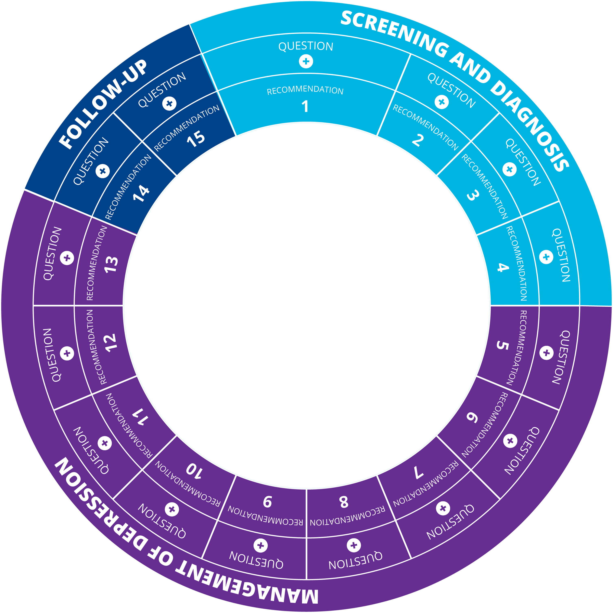
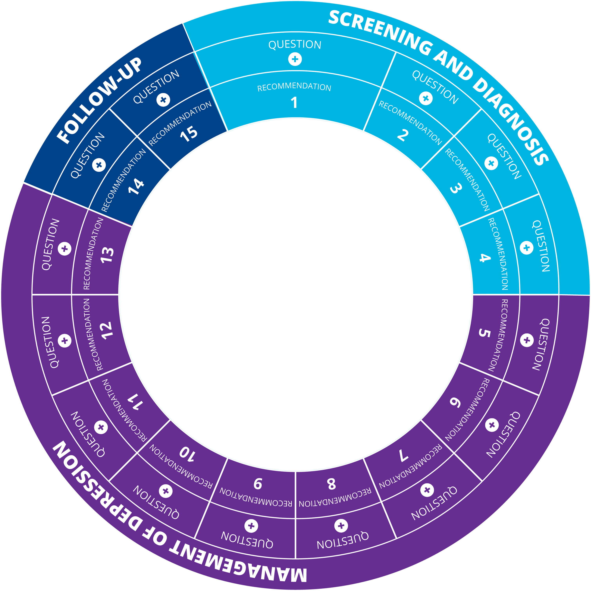

Recommendations for the management of depression in adults with epilepsy: an expert consensus*
Study design
A qualitative study conducted in 4 steps:
- Development of a questionnaire on the management of depression in PWE to be answered;
- Literature review and drafting initial recommendations;
- A nominal group methodology for reviewing initial recommendations and formulating new recommendations on those issues without available evidence;
- Drafting and approving the final recommendations.
*Authors: Vicente Villanueva, Jesús Artal, Clara-Isabel Cabeza-Alvarez, Dulce Campos, Ascensión Castillo, Gerardo Flórez, Manuel Franco-Martin, María Paz García-Portilla, Beatriz G. Giráldez, Francisco Gotor, Luis Gutiérrez-Rojas, Albert Molins Albanell, Gonzalo Paniagua, Luis Pintor, Juan José Poza, Teresa Rubio-Granero, Manuel Toledo, Diego Tortosa-Conesa, Juan Rodríguez-Uranga, Julio Bobes.
 
